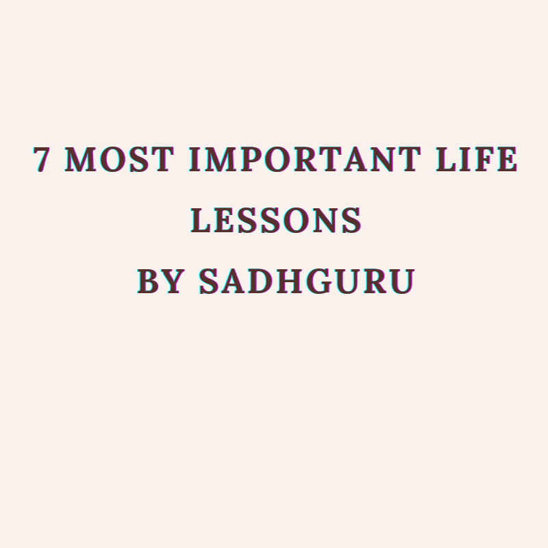
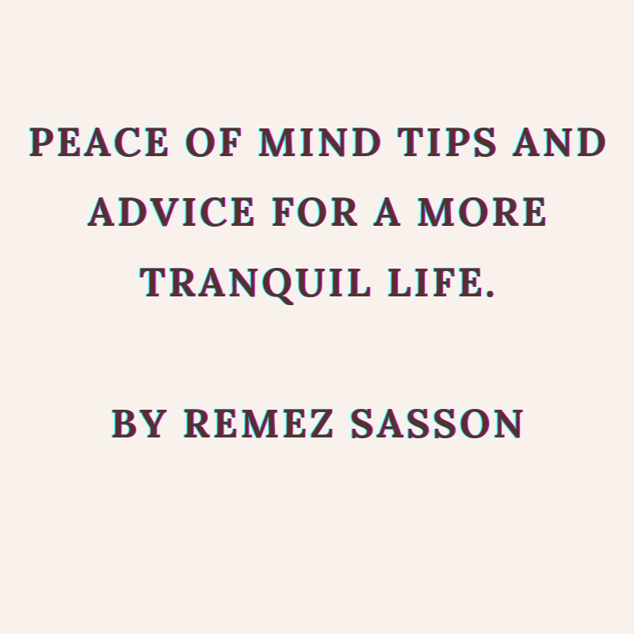
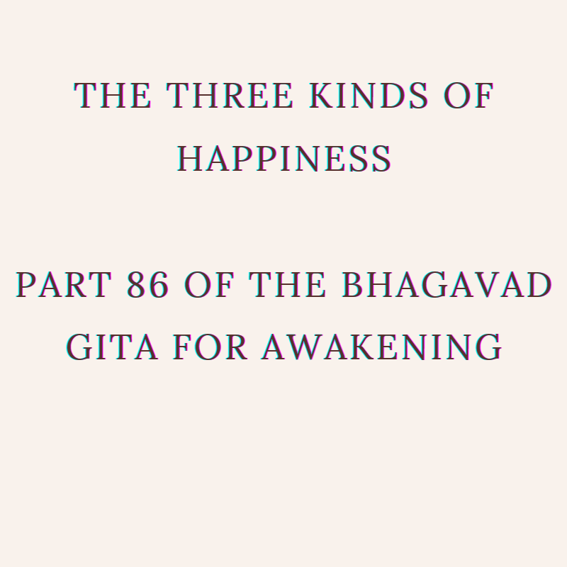

Articles
Life Lessons

Just spend a minute to identify at least one thing in your life that is not necessary and kill that today. When I say “kill,” don’t start thinking about your boss, mother-in-law or neighbor. You must kill something about you that is unnecessary for your life. Something like “I will kill my anger” would be too general and this is not something that you can achieve by determination – this requires consciousness.
Identify something specific that you will be better off without, where you can take a concrete step today – it does not matter how small it is. Choose one specific little thing that you will not do anymore, no matter what. “I will not be angry” would be a lie, because this is not yet in your control but it could be something like, “I will not speak angry words.”
Decide on something that you can do and that you will do. This is how to transform your life – by taking small steps. But you should actually do it – it should not pop up again. If you kill something, it should be dead. If you want to move towards the truth of life, your investment in that which is not true has to be reduced. It may not all vanish immediately, but you must reduce it step-by-step.
Look at life in terms of what can be changed and do something about it. Crying about things that you cannot change is a sure strategy to remain at status quo. At least once a month, every full moon day, consciously look at this and identify one small thing about yourself that you want to change. Like, “Every time before I eat, I will spend 10 seconds in gratitude for this food which is going to become a part of me.” Or, “Every time I use anything that is an essential element of my life, like the soil, the water, the air, and everything else around me, I will save 1% of it.” Or, “I will see to it that I only put on my plate what I can eat.” These small things will change your life and set you apart.
A significant thing every human being has to do is structure their psychological and emotional framework around the most fundamental fact of their life – their mortality. Right now, it takes a lifetime for people to understand that they are mortal; they need a heart attack or the appearance of a malignant lump somewhere to remind them.
You need to celebrate and enjoy every moment of your life because life does not wait for you even for a moment. If you were immortal, you could enjoy a hundred years each of depression, anxiety, madness and misery and then on the 500th anniversary, you could become joyful. But that is not the case.You are mortal and it is ticking away. So there is no time for frustration, depression, anxiety, anger or for any unpleasantness in this life.
In the ashram I always tell people, no matter what work you are doing, every day you must stick your fingers into the earth at least for an hour. This will build a natural physical memory, a bodily memory in you that you are mortal.
Within yourself, is it more pleasant to be loving, or to be angry, hateful and jealous? Which is a more intelligent way to exist? Loving, isn’t it? All I am saying is, please live intelligently. This is not for someone else’s sake. It is pleasant and beautiful for you. Creating a loving world is not a service that you do for someone else. It is an intelligent way to exist.
You can create a loving world in every single activity that you do in your life. Creating a loving world does not mean doing something more or less. If you live your life constantly focused on what you want, it will unquestionably happen in your immediate surroundings, and it will also begin to happen in the larger surroundings.
In many ways, most people’s happiness, peace and love are mortgaged to the external situation. So, if the stock market goes up you are happy, if the stock market goes down you are unhappy. But the quality of life is not about what is around you. Our ability to live joyfully here does not depend on the size of the house we live in or the car that we drive. These things make your life comfortable and convenient but the essential quality of your life is how you are within yourself right now.
Living joyfully and peacefully is not new to you. You were like that as a child, isn’t it? So, I am not talking about taking you beyond, I am just talking about starting at the square one of your life.
The difference between a fool and an intelligent person is that an intelligent person knows how foolish he is; a fool does not. Noticing the stupidity of who you are is great intelligence. Anything in this existence – a tree, a blade of grass, a grain of sand, one single atom – do you understand any of these things fully? No. When this is your level of intelligence and perception, how should you walk in the world? Gently, with a little humility, respect and love for everything around you. If not love, then at least with awe, because you don’t understand a damn thing in this world.
If you just learn to walk like this, you will not escape a spiritual process. You don’t need any teaching. It will happen to you anyway. This is why in the eastern cultures, always, you bow down to whatever you see, whether it is a rock, an animal or a human being. Being in reverence towards the very earth that you walk upon, towards the air that you breathe, the water that you drink, the food that you eat, the people that you come in touch with and everything else that you use, including your body and mind, is a way of ensuring success in every endeavor that we partake in.
Your inner world – if you want to call it that – should only be a reflection of what is around you. This may be diametrically opposite to some moral theories that say the outer and the inner should not touch each other, otherwise you would immediately get corrupted by everything around you. That is not true. You get corrupted by what is around you only when you have opinions about everything.
You look at one thing as good, something else as bad. You get attached to what you consider as good. You desperately try to avoid what you consider as bad, and of course that will rule you from inside. This is not the way to be. Seeing everything just the way it is – that is the way to be within. If you see something other than what is there, it means you are contaminating the world with your opinions and prejudices.
Creation is made so that you see it the way it is, not to make it the way you want to make it. This is an obscenity that humanity is committing upon the Creator’s creation. Such a magnificent creation – what is there for you to do? Absorb it if you can – nothing more – and even that is not simple because creation is phenomenally multi-tiered. So many phenomena are happening right here – one inside the other, all in one space, all in one time.
Everything that you think is past, everything that you think will be future is right here. If you see everything the way it is, if the whole creation reflects within you, if you can contain creation the way it is within you, you become the very source of creation. That is the way to be, inside and outside.
Peace of Mind
Peace of mind is one of the top goals everyone wants to achieve.
This state of mind is of uppermost importance in a world full of stress and strain. It can protect your physical, emotional and mental health.
Like most people, I believe that you often yearn for some calmness and getting away from the daily stress, anxiety, and the constant race. You want, at least for a few moments, to live without worries, fears and restless thinking.
Like most people, you want some inner peace in your life. Let’s find out what it is and how to gain it.
Peace of mind is a state of mental and emotional calmness, with no worries, fears or stress.
In this state, the mind is quiet and tranquil, and you experience a sense of happiness and freedom.
In this state, the mind does not rush from one thought to another.
Such peaceful moments are not so rare. You have experienced them in the past, at times, when you were engaged in some kind of an absorbing or interesting activity.
Activities like these, take away the mind from its habitual thoughts and worries, and replace them with inner peace, at least for a while.The question is, how to experience peace of mind in daily life, and more importantly, how do you experience it in times of difficulties and ordeals.
You might also ask, whether it is possible to turn it into a habit, and enjoy it always and under all circumstances. Actually, there are a few things you can do to enjoy peace in good times, and also in difficult times, as well.
“The mind is like a room that is always full with a lot of stuff. There is no free space there. When you empty your mind of this stuff, you make room for peace of mind.”
“When the restless activity of your mind slows down, when your thoughts stop rushing like waves on a windy day, then you will start getting glimpses of the sweet taste of inner peace.”
Happiness
It is said that everyone wants to be happy, but happiness is not the same to everyone. So Krishna now takes up that subject, for people differ greatly in “the pursuit of happiness” owing to the predominance of one of the three gunas.
"That happiness which is like poison at first, but like amrita in the end,
born of the light of one’s own Self [atmabuddhi], is declared to be sattwic"
Sri Ramakrishna often remarked that rock sugar (not refined sugar) is a cure for certain liver ailments, but to those with such disorders sugar tastes bitter, so they avoid it. The same thing is true of certain other substances. A naturopath once gave me a cup of warm liquid to drink. I swallowed it down and remarked that it tasted good. “If you had said it was nasty tasting, I would have known that you have liver trouble,” he said. It is the same with those (us?) who have spiritual disorders: that which cures them seems distasteful to them and they avoid it. This is a very problematical situation. People have to pervert their bodies to develop addictions to poisonous substances, and in time their addictions seem normal and even healthy, and abstinence seems miserable and harmful. It is the same with the mind and heart.
A friend of mine once spoke with a young man who was utterly addicted to immorality and alcohol. When he pointed out the misery those things caused, the man countered with: “Living like you do would be like living in a prison!” He had no idea how free the other man was, and how content as a result of his abstinence and spiritual outlook. Krishna is speaking of this here. In the beginning that great happiness and fulfillment which is atmabuddhiprasadajam–arising from the tranquility, purity, and brightness of the union of the buddhi with the Atma–seems like a pipe dream or even death. But those who pursue it will find it is the joy of immortality.
Nevertheless, an important principle is set forth in this verse. In the beginning it is normal for spiritual practice to be boring or even annoying. But at the end it will be all sukha: happiness and ease. For it never really is poison, but only seems so to the distorted mind-mirror of those bound in ignorance.
"That happiness arising from the contact of the senses with their objects,
which in the beginning is like amrita but changes into that which is like poison, is declared to be rajasic"
Here we have the opposite of the previous verse. Those things that to the ignorant seem like the nectar of immortality (“This is really living!” “This is the way to live!” “I like it: give me more!”) will in time be seen as deadly poison, but then it is often too late. That is why the Bible says: “Remember now thy Creator in the days of thy youth, while the evil days come not, nor the years draw nigh, when thou shalt say, I have no pleasure in them”. The happiness of rajas is simply fool’s gold.
An interesting point: In this and the previous verse the word pariname is found. It means “when transformed,” the idea being that in time the two kinds of happiness transmute or ripen into either amrita or poison. Actually, they reveal their inner nature–they do not really change, but it seems so to the sadhaka.
"That happiness which in the beginning and as a result is delusive of the Self,
arising from sleep, indolence and heedlessness, is declared to be tamasic."
Krishna describes tamasic happiness as mohanam–deluding, addicting, and confusing–arising from spiritual “sleep” (nidra), idleness and outright spiritual laziness (alasya), and negligence and confusion (pramada). Notice that, unlike sattwic and rajasic happiness, tamasic happiness does not transform into anything other than what it is at the beginning. It does not lead to anything, but remains utterly inert. Sattwic and rajasic happiness leads to conclusions about their merit or demerit. Tamasic happiness, on the other hand, simply lies there and wallows in its own inertia. It goes nowhere.
There is a lesson for us here. We need not worry about sattwic people because they will become increasingly established in sattwa. We need only wait for rajasic people to wake up and move up to sattwa. And we need not even give a second thought to the tamasic: they are going to stay right where we see them. The essence of this is that sensible people do not go around trying to change others. The sattwic are already what they should be, the rajasic are moving toward sattwa, and the tamasic are simply that: tamasic. They “come from the nowhere and go to the no-place.” (I am only speaking of the present birth. They, too, progress in time, but very slowly and it takes a great deal of time for them to crawl out into even half-light.) The wise bless others and keep on working on themselves. Certainly they will encourage those with them on the path and even assist them, but they cannot put anyone on the path or keep them there. Experience proves this over and over.